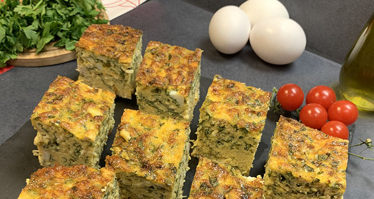

Tajine

Description
The tajine represents the culture and culinary tradition of Tunisia and the Maghreb. Its variations, intense flavors, and cultural importance make this dish a unique experience.
Ingredients
- 1 tsp oil
- 1 onion, diced
- ½ lb chicken breast, diced (roughly one breast)
- 1 ½ tsp coriander seed, ground
- ¾ tsp cumin
- ¾ tsp salt
- ½ tsp caraway seed
- ¼ tsp red pepper flakes
- ¼ tsp black pepper
- ¼ c water
- 1 russet potato, peeled and diced
- 8 eggs, beaten
- 3 oz (3/4 c) Swiss cheese, grated (or other white cheese like Gruyere, Monterey Jack, Gouda, etc)
- ½ c fresh parsley, chopped
Steps
- Preheat the oven to 350⁰F.
- In a large skillet, heat oil. Add diced onions and sauté over medium high heat for 2-3 minutes, until they begin to soften. Add diced chicken and spices.
- Mix to combine.
- Add the water to the skillet and simmer until the liquid has evaporated, 2-3 min.
- Add the potatoes and sauté for an additional 2-3 minutes, until lightly tender.
- Remove the mixture from the heat and pour it into a greased 8x8 baking dish.
- Mix the beaten eggs with 2 oz (1/2 c) of grated cheese and the chopped parsley.
- Pour the eggs over the chicken mixture in the baking dish. Top with the remaining 1 oz of grated cheese.
- Bake the tajine for 35 minutes, or until the middle is set and the top is golden.
- Remove from the oven and let the tajine rest for 10 minutes before cutting. (This will help it set and make it easier to cut.)
- Cut the tajine into 8 rectangles and serve warm or cold.